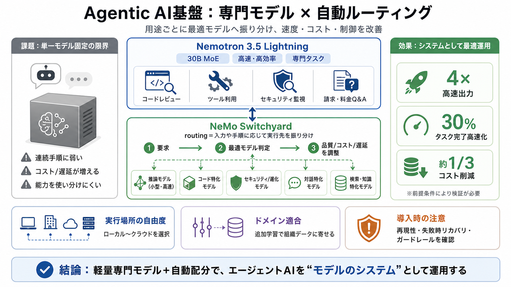

NVIDIA Nemotron 3.5 Lightning and NeMo Switchyard Deliver Faster, Smarter, More Efficient Agentic AI
Nemotron 3.5 Lightning also gives organizations control over privacy and deployment. It can run on local AI systems — in…

Nemotron 3.5 Lightning also gives organizations control over privacy and deployment. It can run on local AI systems — in…
NVIDIA Nemotron™ is a family of highly efficient, multimodal, open AI models built for long-running, self-evolving agent…
NVIDIA Nemotron is an open family of reasoning models, optimized for accuracy and compute efficiency across every stage …
Oracle’s integration of NVIDIA Nemotron brings the power and flexibility of multimodal AI directly to enterprise workloa…
The new Nemotron 3 family provides the most efficient multimodal models, powered by hybrid Mamba‑Transformer MoE with 1M…